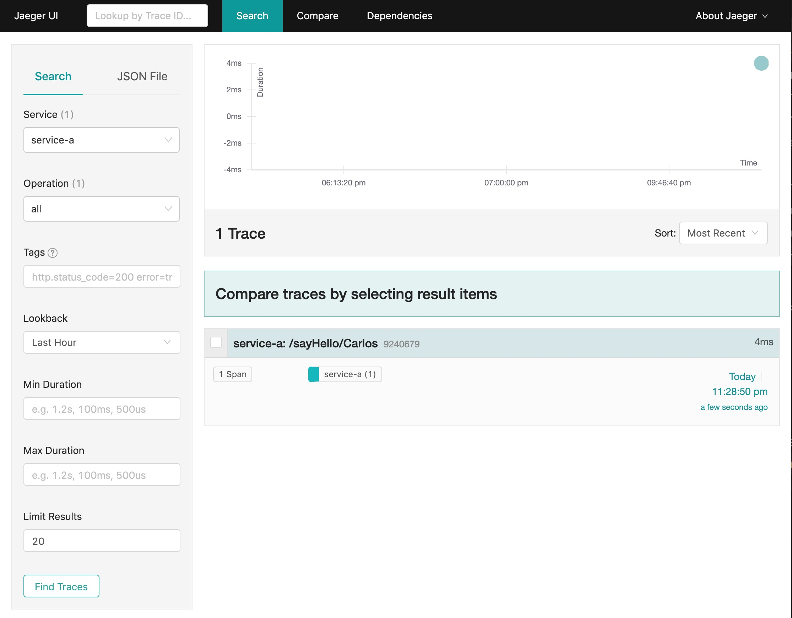
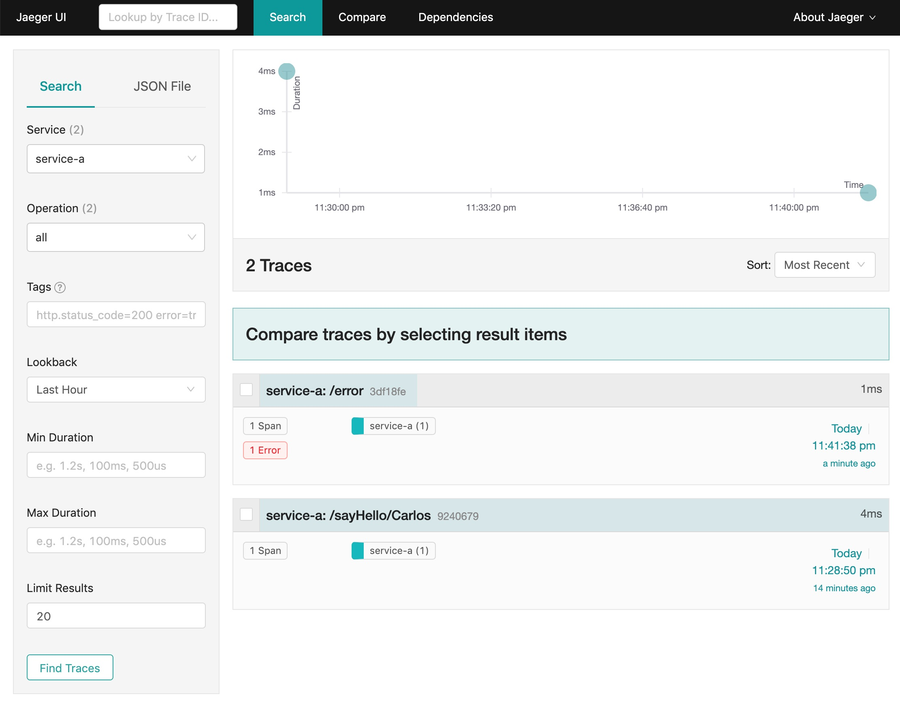
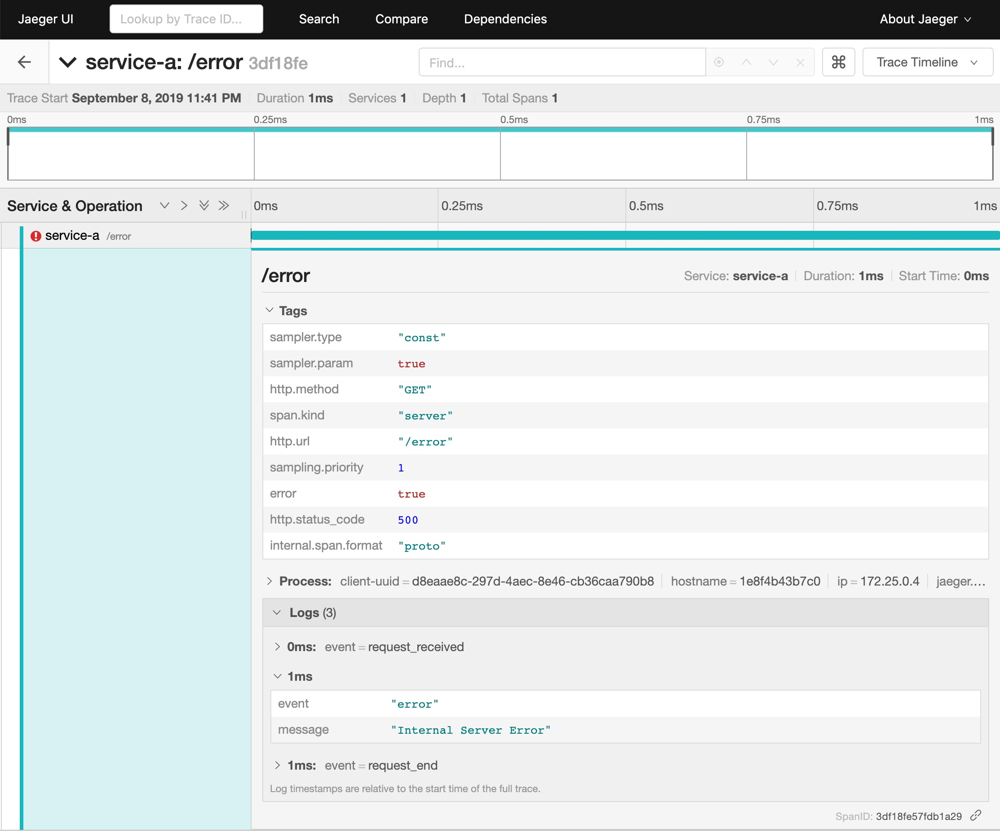
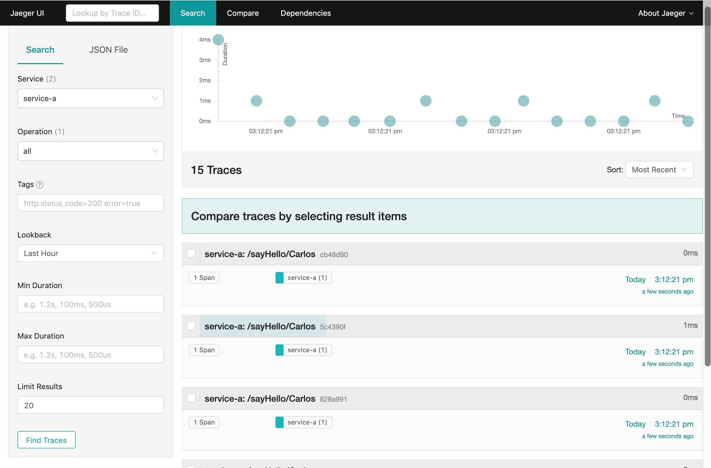
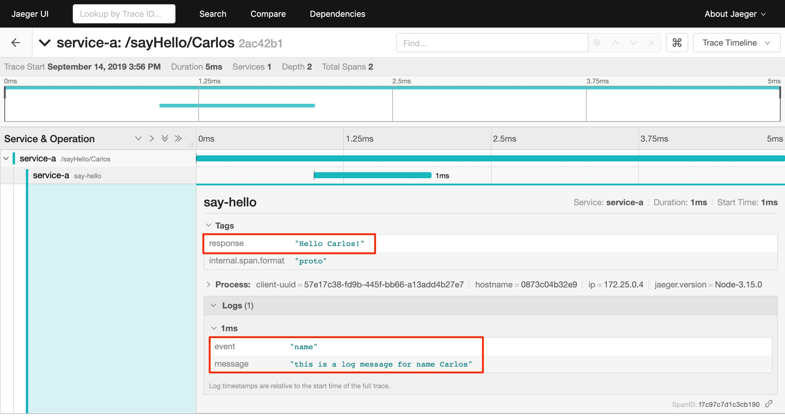
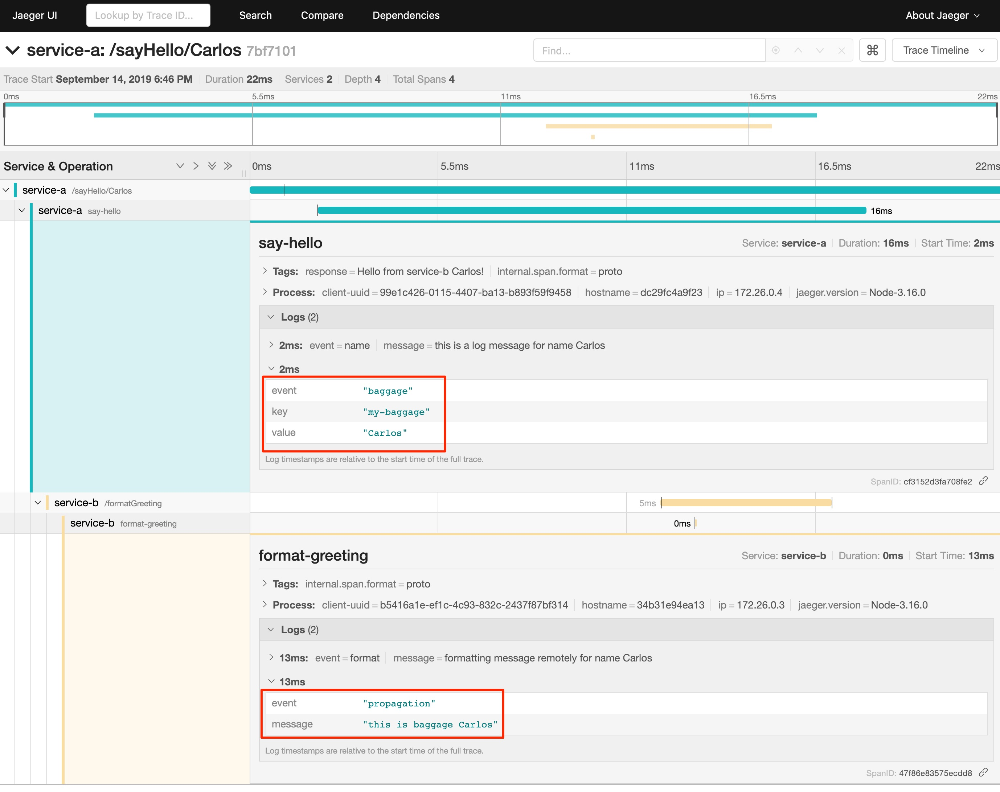

Distributing Tracing Lab - Node.js
Prerequisites
-
Connection to the internet (docker.io, github.com, maven repo, npm registry)
-
Code Editor
-
I recommend VSCode
-
General Instructions
-
Clone the git repository
git clone https://github.com/ibm-cloud-architecture/learning-distributed-tracing-101.git -
Change to the lab directory
cd lab-jaeger-nodejsThe solution to the lab is located in the directory lab-jaeger-nodejs/solutiondocker-compose is already configured to run Jaeger In case that stopping docker-compose doesn’t work with Ctrl-C, you can stop it usingdocker-compose stop
Test your environment
-
Change directory to the lab:
cd lab-jaeger-nodejs
-
Test the service without tracing enable
docker-compose build docker-compose up
-
Try the service
curl http://localhost:8080/sayHello/Carlos Hello Carlos!
Add client libraries
-
Add the tracing client library for the node.js
service-a, edit the fileservice-a/package.jsonand add the dependency forjaeger-clientThe json section should look like the following:{ "dependencies": { "express": "^4.17.1", "jaeger-client": "^3.15.0", "bent": "^6.0.5" } }
Tracing every HTTP request
-
Create a function at the end of the file
service-a/app.jswith the following code to initialize the Jaeger tracer.function initTracer (serviceName) { const initJaegerTracer = require('jaeger-client').initTracerFromEnv // Sampler set to const 1 to capture every request, do not do this for production const config = { serviceName: serviceName } // Only for DEV the sampler will report every span // Other sampler types are described here: https://www.jaegertracing.io/docs/1.7/sampling/ config.sampler = { type: 'const', param: 1 } return initJaegerTracer(config) } -
At line
7add the following code to use the functioninitTracerto initialize the Tracer and set the tracer inopentracing.const tracer = initTracer(serviceName) const opentracing = require('opentracing') opentracing.initGlobalTracer(tracer) -
Create a function at the end of the file
service/app.jswith the following code to trace every incoming HTTP request.function tracingMiddleWare (req, res, next) { const tracer = opentracing.globalTracer(); // Extracting the tracing headers from the incoming http request const wireCtx = tracer.extract(opentracing.FORMAT_HTTP_HEADERS, req.headers) // Creating our span with context from incoming request const span = tracer.startSpan(req.path, { childOf: wireCtx }) // Use the log api to capture a log span.log({ event: 'request_received' }) // Use the setTag api to capture standard span tags for http traces span.setTag(opentracing.Tags.HTTP_METHOD, req.method) span.setTag(opentracing.Tags.SPAN_KIND, opentracing.Tags.SPAN_KIND_RPC_SERVER) span.setTag(opentracing.Tags.HTTP_URL, req.path) // include trace ID in headers so that we can debug slow requests we see in // the browser by looking up the trace ID found in response headers const responseHeaders = {} tracer.inject(span, opentracing.FORMAT_HTTP_HEADERS, responseHeaders) res.set(responseHeaders) // add the span to the request object for any other handler to use the span Object.assign(req, { span }) // finalize the span when the response is completed const finishSpan = () => { if (res.statusCode >= 500) { // Force the span to be collected for http errors span.setTag(opentracing.Tags.SAMPLING_PRIORITY, 1) // If error then set the span to error span.setTag(opentracing.Tags.ERROR, true) // Response should have meaning info to futher troubleshooting span.log({ event: 'error', message: res.statusMessage }) } // Capture the status code span.setTag(opentracing.Tags.HTTP_STATUS_CODE, res.statusCode) span.log({ event: 'request_end' }) span.finish() } res.on('finish', finishSpan) next() }The
tracer.extract(opentracing.FORMAT_HTTP_HEADERS, req.headers)function above will attempt to extract the tracing headers from the incoming HTTP request. If the incoming request contains trace information, it will be used to create a child span from the previous service; the current service will then be correctly associated with the tracing dependency graph.The new span is created using the function
tracer.startSpan(req.path, { childOf: wireCtx })The first activity captured is a log event of
request_endwith the functionspan.log({ event: 'request_received' })The new span context is added to the HTTP response, this way the HTTP client can have this information in case of troubleshooting a particular HTTP request.
const responseHeaders = {} tracer.inject(span, opentracing.FORMAT_HTTP_HEADERS, responseHeaders) res.set(responseHeaders)The
spanis stored in thereqobject, this way the main endpoint handler can use it in case of attaching information into the same span or creating a new child span using this top-levelspanas a parent.Object.assign(req, { span })When the request is finished by listening on the event
finishinres.on('finish', finishSpan), the response is analyzed to check if there was an error. If it is an error then the span is set to be sampled and marked as error using the following functions which includes a log event:span.setTag(opentracing.Tags.SAMPLING_PRIORITY, 1) span.setTag(opentracing.Tags.ERROR, true) span.log({ event: 'error', message: res.statusMessage })For every HTTP response the status Code and a log event are captured. With log event
request_endyou can will easily see the time spent since the log eventrequest_start. Finaly the span needs to be finished.span.setTag(opentracing.Tags.HTTP_STATUS_CODE, res.statusCode) span.log({ event: 'request_end' }) span.finish() -
At line
12add the following code to use the functiontracingMiddleWareas the first middleware to handle every HTTP request.app.use(tracingMiddleWare) -
Build and run the service. If docker-compose is already running in the terminal enter
Ctrl+Cto exit and stop the containers.docker-compose build docker-compose up -
Now that the code is instrumented, call the same API endpoint a few times to capture the traces.
curl http://localhost:8080/sayHello/Carlos Hello Carlos! -
Open the Jaeger UI using the web browser
open http://localhost:16686/jaeger -
Select the Service
service-afrom the drop-down options and clickFind Traces -
Click on one of the traces, then expand the trace’s
TagsandLogs. You should see information about the HTTP request such ashttp.methodset toGETandhttp.status_codeset to200. The Logs section has two log events; one withrequest_receivedand the final logrequest_end. The timestamps for each of the log events give you how much time the request took to be processed by your service business logic. In this example, it took4ms.
-
Force an error in the service by calling the
/errorendpoint.curl http://localhost:8080/error some error (ノ ゜Д゜)ノ ︵ ┻━┻ -
Click
Find Tracesnow it should show a trace mark withErrorin red. -
Click on the trace with the
Error, then expand the trace’sTagsandLogs. You should see information about the trace such aserrorset totrueandhttp.status_codeset to500. The Logs section has an additional log event withmessage = Internal Server Error. Expand the log event.
Finding slow HTTP requests
In the service-a, we have the API endpoint /sayHello. We used this endpoint in the previous section but called it only once. This endpoint has some strange behavior. Not all responses are fast (=~ 2ms) and often the response is slow (=~ 100ms).
-
Stop docker-compose with
Ctrl+Cand start it again.docker-compose up -
Run the following code to call the API multiple times or open the URL endpoint http://localhost:8080/sayHello/Carlos on the web browser and click refresh multiple time.
i=0; while [ $i -lt 15 ]; do curl http://localhost:8080/sayHello/Carlos -I -s | head -n 1; i=$((i+1)); done; -
Open the Jaeger UI using the web browser
open http://localhost:16686/jaeger -
Select the Service
service-afrom the drop-down options and clickFind Traces
In the picture above, you can see a timeline graph with each trace represented with a circle. In this case, we have 15 traces in the result set when we clicked
Find Traces. Some traces are taking approximately 100ms and others are taking approximately 2ms. You can see the pattern where only every 3rd request the response is slow. When troubleshooting, we are interested first in the slowest requests. You can click on one of the traces on the graph, or you can sort in the table byLongest First. -
Select the trace that took the longest time (103ms). Expand all the information for the single-span operation
/sayHelloincluding tags and logs.
-
The handler has a sleep step in the function
sayHellothat delays the response every 3rd request. Open the fileservice-a/hello.jsand located the culprit code.// simulate a slow request every 3 requests setTimeout(async () => { const response = await formatGreeting(name); res.send(response) }, counter++ % 3 === 0 ? 100 : 0) -
Remove the
setTimeoutfunction and replace it with the two functionsformatGreetingandres.send.const response = await formatGreeting(name); res.send(response) -
Build and run the service. If docker-compose is already running in the terminal enter
Ctrl+Cto exit and stop the containers.docker-compose build docker-compose up -
Run again the following code to call the API multiple times or open the URL endpoint http://localhost:8080/sayHello/Carlos on the web browser and click refresh multiple time.
i=0; while [ $i -lt 15 ]; do curl http://localhost:8080/sayHello/Carlos -I -s | head -n 1; i=$((i+1)); done; -
Open the Jaeger UI using the web browser.
open http://localhost:16686/jaeger -
Select the Service
service-afrom the drop-down options and clickFind Traces.You can see now that all HTTP requests are fast and the problem is fixed.
Cloud Native applications can be composed of microservices and each microservice handling multiple endpoints. Instrumenting the code of these microservices enables us to obverse their behavior and quickly narrow down to a specific service; and within that service, to further narrow down to a specific endpoint having problems.
As demonstrated in this exercise, you can increase the observability of your application starting with a single trace and span. In the next sections of this lab, you will create additional spans to further observe the behavior of a specific HTTP handler and function.
Tracing an HTTP handler
In the previous example, we were able to identify the endpoint /sayHello as one of interest in our service. Let’s see how can we add tracing instrumentation to the function that is handling this endpoint.
-
Import at the top of the file
service-a/hello.jstheopentracingmodule, and get the global tracerconst opentracing = require('opentracing') const tracer = opentracing.globalTracer() -
Open the file
service-a/hello.jsand locate the functionsayHelloconst sayHello = async (req, res) => { const name = req.params.name const response = await formatGreeting(name); res.send(response) } -
Create a new child span using the parent span located in the
reqobject as context. This will allow the trace to have an additional child span. Use the functiontracer.startSpanand name the spansay-hello.const sayHello = async (req, res) => { const span = tracer.startSpan('say-hello', { childOf: req.span }) const name = req.params.name const response = await formatGreeting(name); res.send(response) } -
The OpenTracing API supports the method
log. You can log an event with a name and an object. Add a log to the span with a message that contains the value of the name.const sayHello = async (req, res) => { const span = tracer.startSpan('say-hello', { childOf: req.span }) const name = req.params.name span.log({ event: 'name', message: `this is a log message for name ${name}` }) const response = await formatGreeting(name); res.send(response) } -
The OpenTracing API supports the method
setTag. You can tag the span with a key and any value. Add a tag that contains the response, in normal use cases you would not log the entire response and instead key values that are useful for later searching for spans. Remember to call thespan.finish()when you are done instrumenting the span.const sayHello = async (req, res) => { const span = tracer.startSpan('say-hello', { childOf: req.span }) const name = req.params.name span.log({ event: 'name', message: `this is a log message for name ${name}` }) const response = await formatGreeting(name); span.setTag('response', response) span.finish() res.send(response) } -
Build and run the service. If docker-compose is already running in the terminal enter
Ctrl+Cto exit and stop the containers.docker-compose build docker-compose up -
Call the API endpoint.
curl http://localhost:8080/sayHello/Carlos Hello Carlos! -
Open the Jaeger UI using the web browser
open http://localhost:16686/jaeger -
Select the Service
service-afrom the drop-down options and clickFind Traces
Notice in the result items table, for the trace item that the trace indicates that there are a total of two spans
2 Spansand that service-a contains two spansservice-a (2) -
Click the trace, expand the spans
say-hello, and then expand theTagsandLogssections.Notice: * in the Tags section the tag is located with key
nameand the string valueHello Carlos!. * in the Logs section the log event with the namenameand the messagethis is a log message for name Carlos
Tracing a function
The HTTP handler usually calls other functions to perform the business logic, when calling another function within the same service you can create a child span.
-
The
sayHellohandler calls the functionformatGreetingto process the inputname. Pass the current span as an additional parammeterformatGreeting(name, span)const sayHello = async (req, res) => { const span = tracer.startSpan('say-hello', { childOf: req.span }) const name = req.params.name span.log({ event: 'name', message: `this is a log message for name ${name}` }) const response = await formatGreeting(name, span) span.setTag('response', response) span.finish() res.send(response) } -
In the function
formatGreetingcreate a new span usingtracer.startSpan. Use the span from the HTTP handler asparentspan, name the spanformat-greeting. Remember to finish the span before returning withspan.finish().function formatGreeting(name, parent) { const span = tracer.startSpan('format-greeting', { childOf: parent }) span.log({ event: 'format', message: `formatting message locally for name ${name}` }) const response = `Hello ${name}!` span.finish() return response } -
Build and run the service. If docker-compose is already running in the terminal enter
Ctrl+Cto exit and stop the containers.docker-compose build docker-compose up -
Call the API endpoint.
curl http://localhost:8080/sayHello/Carlos Hello Carlos! -
Open the Jaeger UI using the web browser
open http://localhost:16686/jaeger -
Select the Service
service-afrom the drop-down options and clickFind Traces
Notice that the trace now contains three spans.
-
Click the trace, expand the spans
say-helloandformat-greeting, and then expand theLogssections.
Notice the cascading effect between the three spans, the span
format-greetingcontains the messageformatting message locally for name Carlosthat we instrumented.
Distributing Tracing
You can have a single trace that goes across multiple services, this allows you to distribute tracing and better observability on the interactions between services.
In the previous example, we instrumented a single service service-a, and created a span when calling a local function to format the greeting message.
For the following example, we are going to use a remote service service-b to format the message, and returning the formatted greeting message to the HTTP client.
-
In the file
service-a/hello.jslocate the handler functionsayHelloand replace the function callformatGreeting(name, span)withformatGreetingRemote(name, span).const sayHello = async (req, res) => { const span = tracer.startSpan('say-hello', { childOf: req.span }) const name = req.params.name span.log({ event: 'name', message: `this is a log message for name ${name}` }) const response = await formatGreetingRemote(name, span) span.setTag('response', response) span.finish() res.send(response) } -
In the function
formatGreetingRemoteuse the functiontracer.injectto extract the span context and inject them into theheadersof the HTTP request when calling the remote serviceservice-bendpoint/formatGreeting.const bent = require('bent') const formatGreetingRemote = async (name, span) => { const service = process.env.SERVICE_FORMATTER || 'localhost' const servicePort = process.env.SERVICE_FORMATTER_PORT || '8081' const url = `http://${service}:${servicePort}/formatGreeting?name=${name}` const headers = {} tracer.inject(span, opentracing.FORMAT_HTTP_HEADERS, headers) const request = bent('string', headers) const response = await request(url) return response } -
The service
service-bis already instrumented to trace every HTTP request using the same procedure Trace every HTTP request that we did for serviceservice-a. -
Locate the file
service-b/formatter.jsand add. -
Import at the top of the file
service-b/formatter.jstheopentracingmodule, and get the global tracerconst opentracing = require('opentracing') const tracer = opentracing.globalTracer() -
Located the HTTP handler function
formatGreetingin the fileservice-b/formatter.jsfunction formatGreeting(req, res) { const name = req.query.name const response = `Hello from service-b ${name}!` res.send(response) } -
Create a new child span using the parent span located in the
reqobject as context. This will allow the trace to have an additional child span. Use the functiontracer.startSpanand name the spanformat-greeting.function formatGreeting(req, res) { const span = tracer.startSpan('format-greeting', { childOf: req.span }) const name = req.query.name const response = `Hello from service-b ${name}!` res.send(response) } -
Add a log event
formatto the new span using the methodspan.log. Remember to call thespan.finish()when you are done instrumenting the span.function formatGreeting(req, res) { const span = tracer.startSpan('format-greeting', { childOf: req.span }) const name = req.query.name span.log({ event: 'format', message: `formatting message remotely for name ${name}` }) const response = `Hello from service-b ${name}!` span.finish() res.send(response) } -
Build and run the service. If docker-compose is already running in the terminal enter
Ctrl+Cto exit and stop the containers.docker-compose build docker-compose up -
Call the API endpoint.
curl http://localhost:8080/sayHello/Carlos Hello Carlos! -
Open the Jaeger UI using the web browser
open http://localhost:16686/jaeger -
Select the Service
service-afrom the drop-down options and clickFind Traces
Notice that the trace contains a total of four spans
4 Spanstwo forservice-a(2)and two forservice-b(2) -
Click the trace to drill down to get more details.

Notice in the top section, the summary which includes the
Trace Start,Duration: 19ms,Services: 2,Depth: 4andTotal Spans: 4.Notice the bottom section on how the total duration of 19ms is broken down per span, and at which time each span started and ended. You can see that the time spent in
service-bwas 4ms, meaning that for this single HTTP requestservice-aspent 15ms andservice-bspent 4ms. -
Expand the
Logssections for both spanssay-hellofromservice-aandformat-greetingfromservice-b.
Notice on the right side, each span has a summary each with the associated
Service,Duration, andStart Time. TheStart Timeof a span marks the end time from the previous span.Notice the time for the first log message
this is a log message for name Carlosinservice-ais of 1ms, this means this log event happened 1ms after the trace started.Notice the time for the second log message
formatting message remotely for name Carlosinservice-bis of 12ms, this means this log event happened 12ms after the trace started inservice-a.It is very useful to see the log events we instrumented in our endpoint handlers across services in this manner because it provides full observability of the lifecycle of the HTTP request across multiple services.
Baggage propagation
Imagine a scenario where you want to redirect all Safari users to a specific version of a service using the User-Agent HTTP header. This is useful in canary deployments when a new version is rolled out for a specific subset of users. However, the header is present only at the first service. If the routing rule is for a service lower in a call graph then the header has to be propagated through all intermediate services. This is a great use-case for distributed context propagation which is a feature of many tracing systems.
Baggage items are key:value string pairs that apply to the given Span, its SpanContext, and all Spans which directly or transitively reference the local Span. That is, baggage items propagate in-band along with the trace itself.
Baggage items enable powerful functionality given a full-stack OpenTracing integration (for example, arbitrary application data from a mobile app can make it, transparently, all the way into the depths of a storage system), and with it some powerful costs: use this feature with care.
Use this feature thoughtfully and with care. Every key and value is copied into every local and remote child of the associated Span, and that can add up to a lot of network and CPU overhead.
-
Locate the HTTP handler
sayHelloin the fileservice-a/hello.js. Use the methodspan.setBaggageItem('my-baggage', name)before the function callformatGreetingRemote(name, span)to set the baggage with keymy-baggageto the value of thenameparameter.const sayHello = async (req, res) => { const span = tracer.startSpan('say-hello', { childOf: req.span }) const name = req.params.name span.log({ event: 'name', message: `this is a log message for name ${name}` }) span.setBaggageItem('my-baggage', name) const response = await formatGreetingRemote(name, span) span.setTag('response', response) span.finish() res.send(response) } -
Locate the HTTP handler
formatGreetingin the fileservice-b/formatter.js. Use the methodspan.getBaggageItem('my-baggage')to get the value of the name parameter atservice-a. For convenience log the value usingspan.logto see the value in the Jaeger UI.function formatGreeting(req, res) { const span = tracer.startSpan('format-greeting', { childOf: req.span }) const name = req.query.name span.log({ event: 'format', message: `formatting message remotely for name ${name}` }) const response = `Hello from service-b ${name}!` const baggage = span.getBaggageItem('my-baggage') span.log({ event: 'baggage', message: `this is baggage ${baggage}` }) span.finish() res.send(response) } -
Build and run the service. If docker-compose is already running in the terminal enter
Ctrl+Cto exit and stop the containers.docker-compose build docker-compose up -
Call the same API endpoint, but now is instrumented with tracing
curl http://localhost:8080/sayHello/Carlos Hello Carlos! -
Open the Jaeger UI using the web browser
open http://localhost:16686/jaeger -
Select the Service
service-afrom the drop-down options and clickFind Traces. Expand the sectionLogsfor the spanssay-helloandformat-greetingNotice that the baggage is set in the
service-awith the valueCarlosthis baggage is propagated to all spans local or remote. In theserver-bspan you can see the baggage valueCarlosis propagated.
Searching Traces
If you have a specific trace id you can search for it by putting the trace id on the top left search box.
You can also use a tag to search for example searching traces that have a specific HTTP status code, or one of the custom tags we added to a span.
-
To search for traces using HTTP method
GETand status code200, enterhttp.status_code=200 http.method=GETon theTagsfield in the search form, and then clickFind Traces.
Dependency graph
The Jaeger UI has a view for service dependencies, it shows a visual Directed acyclic graph (DAG).
Click the tab Dependencies, then click the DAG tab.

Notice that the graph shows the direction with an arrow flowing from service-a to service-b. It also shows the number of traces between the services.
This is is a simple example and there is not much value for a small set of services, but when a large number of services each with multiple endpoints then the graph becomes more interesting like the following example: